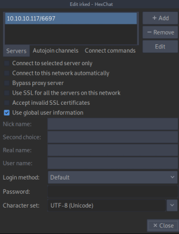
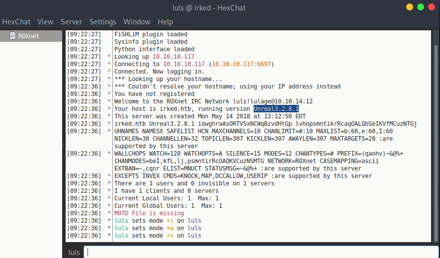

# Port 6667 - IRC
IANA originally assigned IRC to port 194/TCP.
However, the de-facto standard has always been to run IRC on 6667/TCP and/or nearby port numbers (for example TCP ports 6660–6669, 7000) to avoid having to run the IRCd software with root privileges, which port 194 would require.
## Checklist
• Find & scan IRC services
◇
nmap -sV --script irc-botnet-channels,irc-info,irc-unrealircd-backdoor -p 194,6660-7000 10.2.20.52• Connect
◇ HexChat -
apt update && apt install -y hexchat - add a new network
• Grab version
◇ You might be able to grab the IRC daemon version by connecting to a server
• Check version for exploits
◇ UnrealIRCd - 3.2.8.1 - RCE Exploit
## Connect to IRC with HexChat
apt update && apt install -y hexchatOpen HexChat.
Add a new Network.
Click
Edit on your new network.
Configure the IP and port to that of your target.
Click
Close.
Connect## Find Version Number
### Connect
You might be able to see the version number of the IRC server/daemon by connecting to the server.
